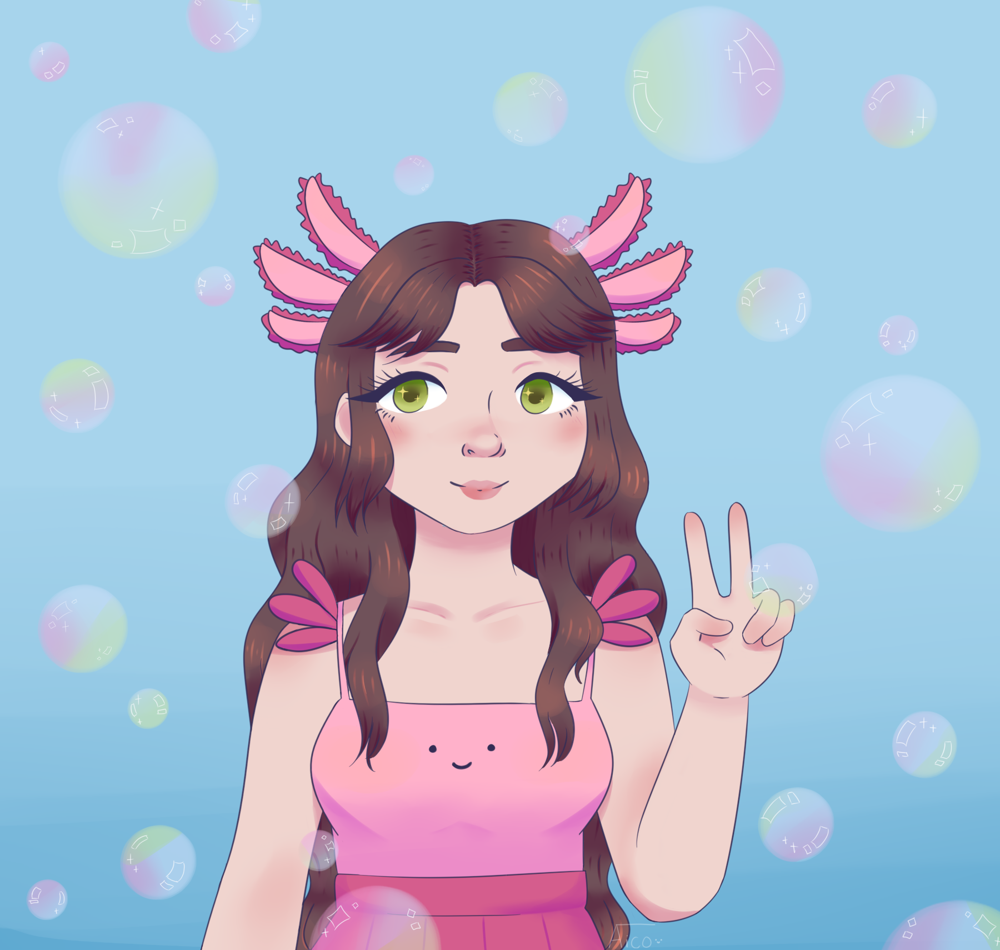

Mis ilustraciones
En esta sección dejo parte de mis trabajos relacionados al dibujo
Ilustración digital
Mi principal herramienta a la hora de ilustrar digitalmente es Clip Studio. En el pasado también he usado Paint Tool Sai, Adobe Photoshop y Adobe illustrator.

Ilustración tradicional
En tradicional suelo usar técnicas mixtas, ya sea entintado, lápices y marcadores a base de alcohol y agua.


Speedpaint
¡También tengo un canal de youtube! Si bien recién estoy empezando, mi idea es poder empezar a redactar el proceso de mis ilustraciones y divertirme con ello.